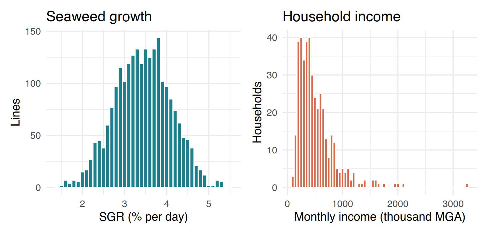
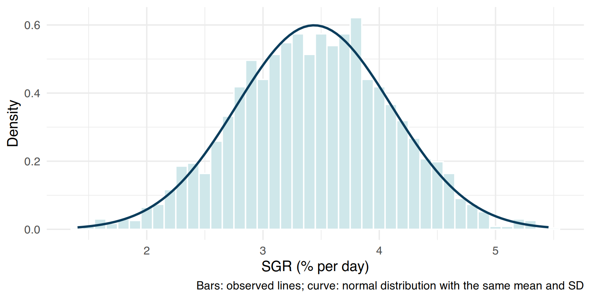
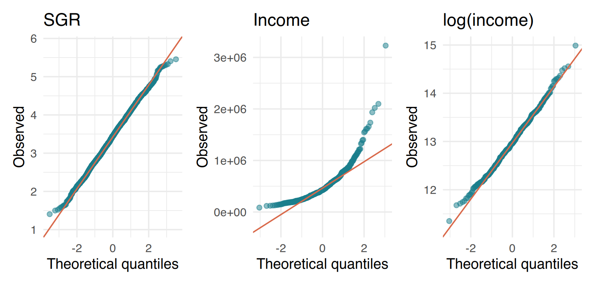
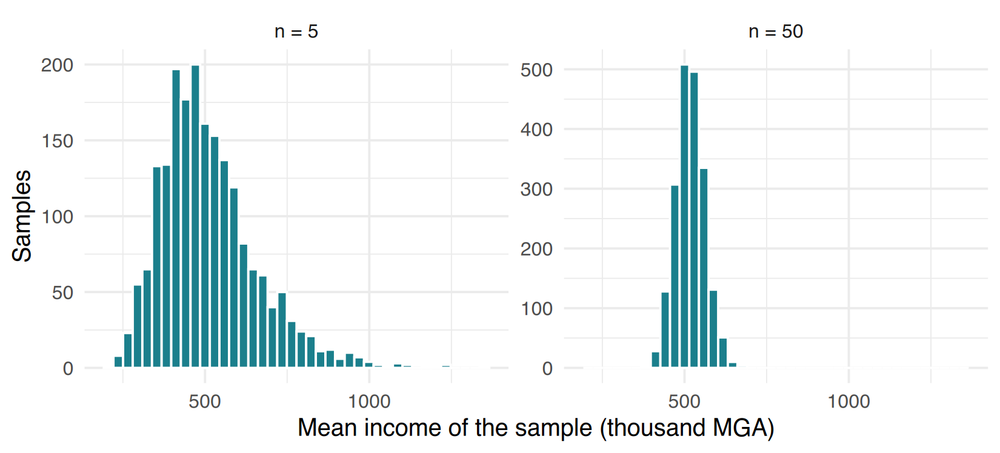
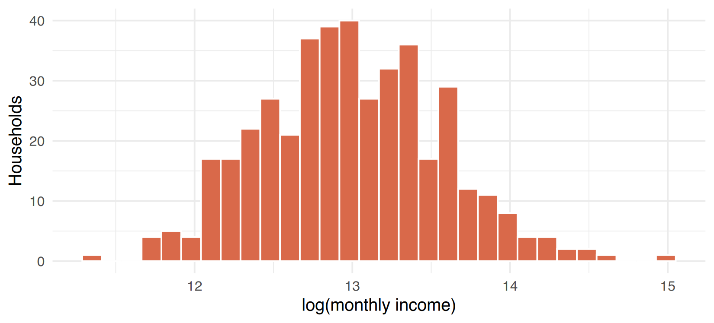
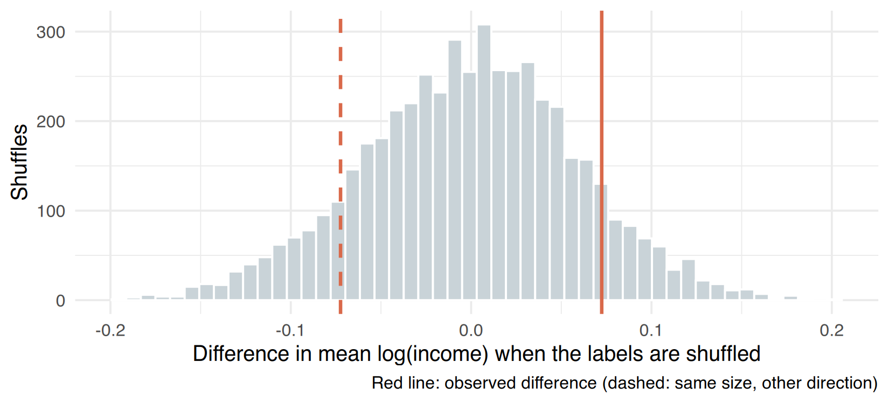

sample() and a loop.sample() et une boucle.Data of this session (simulated). No new data: we reuse two datasets you already cleaned.
I3_seaweed_analysis.csv): one row per farming line, from
the cooperative’s logbooks (planting and harvest dates, fresh weights
weighed on a hanging scale). The variable studied is the
specific growth rate (SGR, % per day), a
continuous variable.I4_households_clean.csv): 420 households interviewed face
to face by four enumerators in 2025. The variable studied is the
declared monthly income (Malagasy ariary, MGA):
continuous, always positive, and — like most incomes — with a few very
high values.This is a session about understanding before testing: the tests themselves come in Session I10.
Données de cette séance (simulées). Pas de nouvelles données : nous réutilisons deux jeux que vous avez déjà nettoyés.
I3_seaweed_analysis.csv) : une ligne par corde de culture,
issue des cahiers de la coopérative (dates de plantation et de récolte,
poids frais pesés au peson). La variable étudiée est le taux de
croissance spécifique (SGR, % par jour), une variable
continue.I4_households_clean.csv) : 420 ménages interrogés en face
à face par quatre enquêteurs en 2025. La variable étudiée est le
revenu mensuel déclaré (ariary malgache, MGA) :
continu, toujours positif et — comme la plupart des revenus — avec
quelques valeurs très élevées.Cette séance sert à comprendre avant de tester : les tests eux-mêmes viennent à la séance I10.
⇩ checkpoint: I3_seaweed_analysis.csv ⇩ checkpoint: I4_households_clean.csv
The 420 households are a sample; what we want to know is something about the population (all households of the 12 villages). A statistic computed on the sample (a mean, a proportion, a correlation) is an estimate: another sample would give a slightly different value. Statistics are mostly about this question: is the pattern I see larger than what sampling chance alone would produce? Keep this sentence in mind for the whole session.
Les 420 ménages sont un échantillon ; ce que nous voulons connaître concerne la population (tous les ménages des 12 villages). Une statistique calculée sur l’échantillon (moyenne, proportion, corrélation) est une estimation : un autre échantillon donnerait une valeur un peu différente. La statistique répond surtout à cette question : le motif que je vois est-il plus grand que ce que le seul hasard de l’échantillonnage produirait ? Gardez cette phrase en tête pendant toute la séance.
A distribution describes which values a variable takes and how often. Always plot it first (Beginner Session 8, Intermediate Session I7): a histogram, or a density curve.
Une distribution décrit les valeurs que prend une variable et leur fréquence. Tracez-la toujours d’abord (débutant séance 8, intermédiaire séance I7) : un histogramme, ou une courbe de densité.
p_sgr <- ggplot(seaweed, aes(sgr)) +
geom_histogram(binwidth = 0.1, fill = "#1b7f8c", colour = "white", na.rm = TRUE) +
labs(x = "SGR (% per day)", y = "Lines", title = "Seaweed growth") + theme_c()
p_inc <- ggplot(hh, aes(monthly_income_mga / 1000)) +
geom_histogram(binwidth = 50, fill = "#d9694a", colour = "white") +
labs(x = "Monthly income (thousand MGA)", y = "Households", title = "Household income") + theme_c()
p_sgr | p_inc
#> mean median
#> 516950 426000#> [1] 29The mean is pulled by the long tail: here it is about 90 000 MGA above the median. For a skewed variable, the median (with the quartiles) describes a “typical” household better; the mean is still useful for totals (total income of the village = mean × number of households). For a symmetric variable, mean and median are close and the mean (± SD) is the usual summary.
La moyenne est tirée par la longue queue : ici elle dépasse la médiane d’environ 90 000 MGA. Pour une variable asymétrique, la médiane (avec les quartiles) décrit mieux un ménage « typique » ; la moyenne reste utile pour des totaux (revenu total du village = moyenne × nombre de ménages). Pour une variable symétrique, moyenne et médiane sont proches et la moyenne (± ET) est le résumé habituel.
Try it. Compute the mean and median of
final_weight_kg in seaweed. Is it skewed? In
which direction? Then draw its histogram to check.
À vous. Calculez la moyenne et la médiane de
final_weight_kg dans seaweed. Est-elle
asymétrique ? Dans quel sens ? Tracez ensuite son histogramme pour
vérifier.
The normal (Gaussian) distribution is the symmetric bell curve defined by two numbers: its mean (centre) and its standard deviation (spread). Many tests (“parametric” tests, such as the t-test and Pearson’s correlation) assume that the data — or the model errors — are approximately normal. In a normal distribution, about 68 % of the values are within mean ± 1 SD, 95 % within mean ± 2 SD (exactly 1.96) and 99.7 % within ± 3 SD.
R has four functions for each distribution: rnorm()
draws random values, dnorm() gives the density (the height
of the curve), pnorm() the probability below a value,
qnorm() the value below which a given probability lies.
La distribution normale (gaussienne) est la courbe en cloche symétrique définie par deux nombres : sa moyenne (centre) et son écart-type (dispersion). Beaucoup de tests (tests « paramétriques », comme le test t et la corrélation de Pearson) supposent que les données — ou les erreurs du modèle — sont à peu près normales. Dans une distribution normale, environ 68 % des valeurs sont dans moyenne ± 1 ET, 95 % dans moyenne ± 2 ET (exactement 1,96) et 99,7 % dans ± 3 ET.
R a quatre fonctions pour chaque distribution : rnorm()
tire des valeurs au hasard, dnorm() donne la densité
(hauteur de la courbe), pnorm() la probabilité en dessous
d’une valeur, qnorm() la valeur sous laquelle se trouve une
probabilité donnée.
#> [1] 0.9500042#> [1] 1.959964set.seed(1) # same random numbers for everybody (Beginner Session 6)
fake <- rnorm(1000, mean = 3.4, sd = 0.65) # 1000 "ideal" SGR values
mean(abs(fake - mean(fake)) < 2 * sd(fake)) # proportion within mean ± 2 SD#> [1] 0.949Let us put the theoretical curve on top of the real SGR histogram.
The trick: draw the histogram on the density scale
(after_stat(density)) so that the bars and the curve have
the same units.
Superposons la courbe théorique à l’histogramme réel du SGR. L’astuce
: dessiner l’histogramme sur l’échelle de densité
(after_stat(density)) pour que les barres et la courbe
aient les mêmes unités.
m <- mean(seaweed$sgr, na.rm = TRUE); s <- sd(seaweed$sgr, na.rm = TRUE)
ggplot(seaweed, aes(sgr)) +
geom_histogram(aes(y = after_stat(density)), binwidth = 0.1,
fill = "#cfe7ea", colour = "white", na.rm = TRUE) +
stat_function(fun = dnorm, args = list(mean = m, sd = s),
colour = "#0b3d5c", linewidth = 1) + # normal curve with the same mean and SD
labs(x = "SGR (% per day)", y = "Density",
caption = "Bars: observed lines; curve: normal distribution with the same mean and SD") + theme_c()
The QQ-plot (quantile–quantile) is the best visual check. Each point compares an observed value with the value expected if the data were normal. Normal data fall on the straight line; a curve (banana shape) indicates skewness; points leaving the line only at the ends indicate heavy tails or outliers.
Le QQ-plot (quantile–quantile) est le meilleur contrôle visuel. Chaque point compare une valeur observée à la valeur attendue si les données étaient normales. Des données normales tombent sur la droite ; une courbe (forme de banane) indique une asymétrie ; des points qui ne quittent la droite qu’aux extrémités indiquent des queues épaisses ou des valeurs extrêmes.
qq <- function(x, title) { # small function (Session I6) to avoid repeating code
ggplot(data.frame(x = x), aes(sample = x)) +
stat_qq(colour = "#1b7f8c", alpha = 0.5) + stat_qq_line(colour = "#d9694a") +
labs(x = "Theoretical quantiles", y = "Observed", title = title) + theme_c()
}
qq(seaweed$sgr[!is.na(seaweed$sgr)], "SGR") | qq(inc, "Income") | qq(log(inc), "log(income)")
#>
#> Shapiro-Wilk normality test
#>
#> data: inc
#> W = 0.79851, p-value < 2.2e-16#>
#> Shapiro-Wilk normality test
#>
#> data: log(inc)
#> W = 0.99634, p-value = 0.4517shapiro.test() tests the null hypothesis “the data are
normal”. A small p-value means “clear evidence of non-normality”.
But:
So: look at the histogram and the QQ-plot first, and use the test as a complement. What matters is whether the deviation is large enough to distort your analysis — and with large samples, tests on means are quite robust (see the next section).
shapiro.test() teste l’hypothèse nulle « les données
sont normales ». Une petite p-value signifie « preuve claire de
non-normalité ». Mais :
Donc : regardez d’abord l’histogramme et le QQ-plot, et utilisez le test en complément. Ce qui compte, c’est de savoir si l’écart est assez grand pour fausser votre analyse — et avec de grands échantillons, les tests sur les moyennes sont assez robustes (voir la section suivante).
Even when the data are skewed, the mean of a sample becomes approximately normal when the sample is large enough (the central limit theorem). Let us see it with a loop (Session I5): we draw 2000 samples of 5 or of 50 households and keep their mean income.
Même quand les données sont asymétriques, la moyenne d’un échantillon devient à peu près normale quand l’échantillon est assez grand (le théorème central limite). Vérifions-le avec une boucle (séance I5) : nous tirons 2000 échantillons de 5 ou de 50 ménages et gardons leur revenu moyen.
set.seed(2)
means5 <- replicate(2000, mean(sample(inc, 5))) # replicate() = a short for-loop that collects results
means50 <- replicate(2000, mean(sample(inc, 50)))
sims <- data.frame(n = rep(c("n = 5", "n = 50"), each = 2000), mean = c(means5, means50) / 1000)
ggplot(sims, aes(mean)) + geom_histogram(bins = 40, fill = "#1b7f8c", colour = "white") +
facet_wrap(~ n, scales = "free_y") +
labs(x = "Mean income of the sample (thousand MGA)", y = "Samples") + theme_c()
With 5 households the means are still skewed; with 50 they are almost perfectly bell-shaped, and much less spread. This is why a t-test on large groups tolerates non-normal data, while with small groups normality really matters.
Avec 5 ménages, les moyennes restent asymétriques ; avec 50, elles sont presque parfaitement en cloche, et beaucoup moins dispersées. C’est pourquoi un test t sur de grands groupes tolère des données non normales, alors qu’avec de petits groupes la normalité compte vraiment.
A transformation applies the same function to every value to change the shape of the distribution, usually to make it more symmetric (closer to normal) and to reduce the weight of extreme values. The order of the values is unchanged.
| Situation | Transformation | R |
|---|---|---|
| Positive, right-skewed (income, weight, concentration, biomass) | logarithm | log(x) |
| Same, but with zeros | log of x + 1 | log1p(x) (= log(x + 1)) |
| Counts (individuals per quadrat), moderate skew | square root | sqrt(x) |
| Proportions / percentages | no simple fix: analyse the counts (Session I10) | — |
Une transformation applique la même fonction à chaque valeur pour changer la forme de la distribution, en général pour la rendre plus symétrique (plus proche de la normale) et réduire le poids des valeurs extrêmes. L’ordre des valeurs ne change pas.
| Situation | Transformation | R |
|---|---|---|
| Positif, asymétrique à droite (revenu, poids, concentration, biomasse) | logarithme | log(x) |
| Idem, mais avec des zéros | log de x + 1 | log1p(x) (= log(x + 1)) |
| Comptages (individus par quadrat), asymétrie modérée | racine carrée | sqrt(x) |
| Proportions / pourcentages | pas de solution simple : analyser les effectifs (séance I10) | — |
hh$log_income <- log(hh$monthly_income_mga) # natural log (base e); log10() also works
ggplot(hh, aes(log_income)) +
geom_histogram(bins = 30, fill = "#d9694a", colour = "white") +
labs(x = "log(monthly income)", y = "Households") + theme_c()
After the log, income is nicely symmetric (and Shapiro–Wilk no longer
rejects normality above). You can then compute a mean on the log
scale — but report it on the original scale by
back-transforming with exp(). The result,
exp(mean(log(x))), is the geometric mean:
a “typical” value that is not pulled by the tail, close to the
median.
Après le log, le revenu est bien symétrique (et Shapiro–Wilk ne
rejette plus la normalité plus haut). On peut alors calculer une moyenne
sur l’échelle log — mais on la rapporte sur l’échelle
d’origine en la re-transformant avec
exp(). Le résultat, exp(mean(log(x))), est la
moyenne géométrique : une valeur « typique » non tirée
par la queue, proche de la médiane.
geo_mean <- function(x) exp(mean(log(x), na.rm = TRUE)) # a reusable function (Session I6)
c(arithmetic = mean(inc), geometric = geo_mean(inc), median = median(inc))#> arithmetic geometric median
#> 516950.0 437185.9 426000.0Three traps. (1) log(0) is
-Inf and log of a negative number is
NaN: check min(x) first, and use
log1p() if there are zeros. (2) A difference of means on
the log scale is a ratio on the original scale:
exp(0.07) ≈ 1.07, i.e. “7 % higher”. (3) Do not transform
“until the test is significant”: choose the transformation from the
nature of the variable and from the plots, before
testing.
Trois pièges. (1) log(0) vaut
-Inf et le log d’un nombre négatif vaut
NaN : vérifiez d’abord min(x), et utilisez
log1p() s’il y a des zéros. (2) Une différence de moyennes
sur l’échelle log est un rapport sur l’échelle
d’origine : exp(0.07) ≈ 1,07, soit « 7 % plus élevé ». (3)
Ne transformez pas « jusqu’à ce que le test soit significatif » :
choisissez la transformation d’après la nature de la variable et les
graphiques, avant de tester.
Try it. distance_coast_km contains
zeros. What does min(log(hh$distance_coast_km)) return?
Compare the QQ-plots of distance_coast_km,
sqrt(distance_coast_km) and
log1p(distance_coast_km).
À vous. distance_coast_km contient des
zéros. Que renvoie min(log(hh$distance_coast_km)) ?
Comparez les QQ-plots de distance_coast_km,
sqrt(distance_coast_km) et
log1p(distance_coast_km).
Question of the cooperative: do households that farm seaweed earn more? The geometric means differ:
Question de la coopérative : les ménages qui cultivent les algues gagnent-ils plus ? Les moyennes géométriques diffèrent :
#> FALSE TRUE
#> 426466.0 458491.4obs <- mean(hh$log_income[hh$does_seaweed]) - mean(hh$log_income[!hh$does_seaweed])
obs # observed difference on the log scale#> [1] 0.07240896#> [1] 1.075095But is a 7.5 % difference larger than what chance
alone could produce with groups of 144 and 276 households? Let us build
the answer ourselves. Suppose that farming seaweed has
no link with income (this is the null
hypothesis, H0). Then the labels “seaweed / no seaweed” are
arbitrary: we can shuffle them with
sample() and recompute the difference, many times. This
gives the distribution of differences produced by chance alone — a
permutation test.
Mais une différence de 7,5 % est-elle plus grande que ce que le
hasard seul pourrait produire avec des groupes de 144
et 276 ménages ? Construisons la réponse nous-mêmes. Supposons que la
culture d’algues n’ait aucun lien avec le revenu (c’est
l’hypothèse nulle, H0). Alors les étiquettes « algues /
pas d’algues » sont arbitraires : on peut les mélanger
avec sample() et recalculer la différence, de nombreuses
fois. On obtient la distribution des différences produites par le seul
hasard — un test de permutation.
set.seed(42)
n_perm <- 5000
perm <- numeric(n_perm) # empty vector to fill (Session I5)
for (i in 1:n_perm) {
shuffled <- sample(hh$does_seaweed) # same labels, random order
perm[i] <- mean(hh$log_income[shuffled]) - mean(hh$log_income[!shuffled])
}
p_perm <- mean(abs(perm) >= abs(obs)) # share of shuffles at least as extreme as what we observed
p_perm#> [1] 0.2166ggplot(data.frame(d = perm), aes(d)) +
geom_histogram(bins = 50, fill = "#c9d3d8", colour = "white") +
geom_vline(xintercept = c(-obs, obs), colour = "#d9694a", linewidth = 1, linetype = c(2, 1)) +
labs(x = "Difference in mean log(income) when the labels are shuffled", y = "Shuffles",
caption = "Red line: observed difference (dashed: same size, other direction)") + theme_c()
About 22 % of the random shuffles give a difference at least as large as the one we observed. That proportion is the p-value:
p-value = the probability of observing a difference (or a correlation…) at least as extreme as ours if the null hypothesis were true.
Here, p ≈ 0.22: a difference of this size is common under chance alone, so the data give no convincing evidence that seaweed households earn more. A classic t-test on the log scale gives almost the same p-value — it uses a mathematical formula instead of shuffling:
Environ 22 % des mélanges aléatoires donnent une différence au moins aussi grande que celle observée. Cette proportion est la p-value :
p-value = la probabilité d’observer une différence (ou une corrélation…) au moins aussi extrême que la nôtre si l’hypothèse nulle était vraie.
Ici, p ≈ 0.22 : une différence de cette taille est fréquente sous le seul effet du hasard ; les données n’apportent donc pas de preuve convaincante que les ménages cultivateurs gagnent plus. Un test t classique sur l’échelle log donne presque la même p-value — il utilise une formule mathématique au lieu des mélanges :
#> [1] 0.2147531What a p-value is NOT.
Ce qu’une p-value N’EST PAS.
Try it. Rerun the permutation with
set.seed(7). Does the p-value change? By how much? Why is
it never exactly the same as the t-test? (Hint: 5000 shuffles
is a sample of all possible shuffles.)
À vous. Relancez la permutation avec
set.seed(7). La p-value change-t-elle ? De combien ?
Pourquoi n’est-elle jamais exactement égale à celle du test t ?
(Indice : 5000 mélanges sont un échantillon de tous les mélanges
possibles.)
Script scripts/i09_distributions.R. Start from the two
checkpoint files above.
monthly_income_mga (MGA).geo_mean() function).shapiro.test() on
log(monthly_income_mga) (3 decimals).sgr (without NA), proportion of lines within mean ±
2 SD (3 decimals). Is it close to what a normal distribution
predicts?technique, inside Lovobe) and compare
your p-value with t.test().final_weight_kg and of its log.
Which looks more normal?Script scripts/i09_distributions.R. Partez des deux
fichiers checkpoint ci-dessus.
monthly_income_mga (MGA).geo_mean()).shapiro.test() sur
log(monthly_income_mga) (3 décimales).sgr (sans NA), proportion des lignes comprises
dans moyenne ± 2 ET (3 décimales). Est-ce proche de ce que prédit une
distribution normale ?technique, dans Lovobe) et
comparez votre p-value avec t.test().final_weight_kg et de son log.
Lequel paraît le plus normal ?Question 6: first
lv <- seaweed[seaweed$village == "Lovobe" & !is.na(seaweed$sgr), ],
then work only with lv. Inside the loop, shuffle
lv$technique with sample().
Question 6 : d’abord
lv <- seaweed[seaweed$village == "Lovobe" & !is.na(seaweed$sgr), ],
puis travaillez seulement avec lv. Dans la boucle, mélangez
lv$technique avec sample().
library(ggplot2); library(dplyr)
hh <- read.csv("data/checkpoints/I4_households_clean.csv")
seaweed <- read.csv("data/checkpoints/I3_seaweed_analysis.csv")
inc <- hh$monthly_income_mga
median(inc); mean(inc) # 1: mean > median -> right-skewed (2)
geo_mean <- function(x) exp(mean(log(x), na.rm = TRUE))
round(geo_mean(inc)) # 3
shapiro.test(log(inc)) # 4
x <- seaweed$sgr[!is.na(seaweed$sgr)]
mean(abs(x - mean(x)) < 2 * sd(x)) # 5: ~0.96, close to the 95 % of a normal
lv <- seaweed[seaweed$village == "Lovobe" & !is.na(seaweed$sgr), ]
obs <- mean(lv$sgr[lv$technique == "long-line"]) - mean(lv$sgr[lv$technique == "off-bottom"])
round(obs, 3) # 6
set.seed(42)
perm <- numeric(5000)
for (i in 1:5000) {
tech <- sample(lv$technique)
perm[i] <- mean(lv$sgr[tech == "long-line"]) - mean(lv$sgr[tech == "off-bottom"])
}
mean(abs(perm) >= abs(obs)) # very small p-value (often 0 of 5000: p < 0.0002)
t.test(sgr ~ technique, data = lv)$p.value # ~0.0006: same conclusion
w <- seaweed$final_weight_kg[!is.na(seaweed$final_weight_kg)]
qqnorm(w); qqline(w); qqnorm(log(w)); qqline(log(w)) # 7: the log is closer to the line